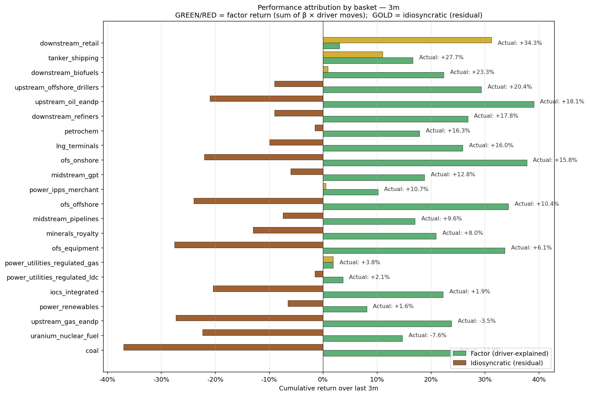
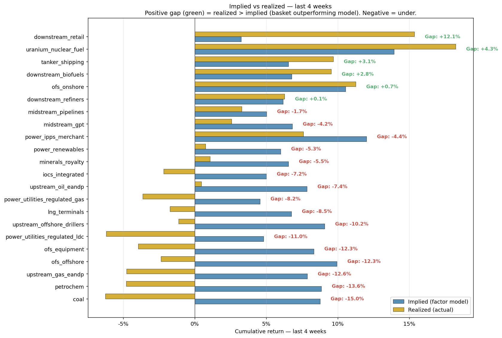
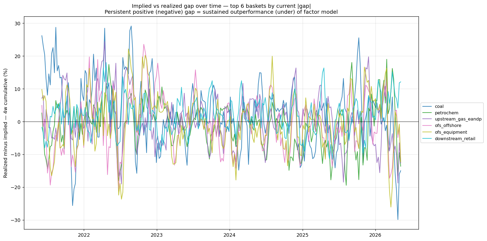

Phase 4 — Performance Attribution & Implied vs Realized
Decomposes recent returns into factor (driver-explained) and idiosyncratic (residual).
How to read attribution: for each basket, ACTUAL return = FACTOR return + IDIOSYNCRATIC return.
Factor return is what the basket's historical betas would predict given the actual driver moves over the window.
Idiosyncratic is everything else — could be unmodeled factors, news, mispricing, or noise.
A large positive idio means the basket outperformed what its driver model predicts; large negative means underperformed.
This is the lens for "what's actually moving here that I should investigate."
1. Basket attribution — 3 month

Top idio outperformers (3m)
| Basket | Actual | Factor | Idio |
|---|
| downstream_retail | +34.3% | +3.1% | +31.2% |
| tanker_shipping | +27.7% | +16.7% | +11.1% |
| power_utilities_regulated_gas | +3.8% | +1.9% | +1.9% |
| downstream_biofuels | +23.3% | +22.4% | +0.9% |
| power_ipps_merchant | +10.7% | +10.2% | +0.5% |
| power_utilities_regulated_ldc | +2.1% | +3.7% | -1.5% |
| petrochem | +16.3% | +17.9% | -1.5% |
| midstream_gpt | +12.8% | +18.8% | -6.0% |
Top idio underperformers (3m)
| Basket | Actual | Factor | Idio |
|---|
| coal | -12.9% | +24.1% | -37.0% |
| ofs_equipment | +6.1% | +33.7% | -27.6% |
| upstream_gas_eandp | -3.5% | +23.8% | -27.3% |
| ofs_offshore | +10.4% | +34.4% | -24.0% |
| uranium_nuclear_fuel | -7.6% | +14.7% | -22.3% |
| ofs_onshore | +15.8% | +37.8% | -22.0% |
| upstream_oil_eandp | +18.1% | +39.1% | -21.0% |
| iocs_integrated | +1.9% | +22.2% | -20.4% |
2. Implied vs realized — last 4 weeks

| Basket | Realized 4w | Implied 4w | Gap |
|---|
| coal | -6.2% | +8.8% | -15.0% |
| petrochem | -4.8% | +8.9% | -13.6% |
| upstream_gas_eandp | -4.8% | +7.9% | -12.6% |
| ofs_offshore | -2.4% | +9.9% | -12.3% |
| ofs_equipment | -3.9% | +8.3% | -12.3% |
| downstream_retail | +15.4% | +3.2% | +12.1% |
| power_utilities_regulated_ldc | -6.2% | +4.8% | -11.0% |
| upstream_offshore_drillers | -1.1% | +9.1% | -10.2% |
| lng_terminals | -1.7% | +6.8% | -8.5% |
| power_utilities_regulated_gas | -3.6% | +4.6% | -8.2% |
| upstream_oil_eandp | +0.5% | +7.8% | -7.4% |
| iocs_integrated | -2.2% | +5.0% | -7.2% |
| minerals_royalty | +1.1% | +6.5% | -5.5% |
| power_renewables | +0.7% | +6.0% | -5.3% |
| power_ipps_merchant | +7.6% | +12.0% | -4.4% |
| uranium_nuclear_fuel | +18.2% | +13.9% | +4.3% |
| midstream_gpt | +2.6% | +6.8% | -4.2% |
| tanker_shipping | +9.7% | +6.6% | +3.1% |
| downstream_biofuels | +9.5% | +6.8% | +2.8% |
| midstream_pipelines | +3.3% | +5.0% | -1.7% |
| ofs_onshore | +11.2% | +10.5% | +0.7% |
| downstream_refiners | +6.3% | +6.2% | +0.1% |
Gap over time — top 6 baskets by current |gap|

3. Top idiosyncratic name movers (3m)
↑ Outperformed factor model
| Ticker | Name | Node | Actual | Factor | Idio |
|---|
| MUSA | Murphy USA | downstream_retail | +42.4% | +3.2% | +39.2% |
| SOC | Sable Offshore | upstream_offshore_drillers | +52.4% | +16.7% | +35.7% |
| DEC | Diversified Energy | upstream_gas_eandp | +16.2% | -17.6% | +33.8% |
| CASY | Casey's General Stores | downstream_retail | +26.2% | +3.2% | +23.0% |
| NAT | Nordic American Tankers | tanker_shipping | +33.4% | +10.9% | +22.5% |
| INSW | International Seaways | tanker_shipping | +37.0% | +14.7% | +22.3% |
| ASC | Ardmore Shipping | tanker_shipping | +36.3% | +16.1% | +20.3% |
| KGS | Kodiak Gas Services | midstream_gpt | +36.8% | +16.5% | +20.2% |
| TEN | Tsakos Energy Navigation | tanker_shipping | +47.0% | +26.8% | +20.1% |
| SFL | SFL Corporation | tanker_shipping | +27.2% | +12.0% | +15.1% |
| TK | Teekay Corporation | tanker_shipping | +26.1% | +12.0% | +14.1% |
| DHT | DHT Holdings | tanker_shipping | +26.7% | +12.9% | +13.8% |
| ETR | Entergy | power_utilities_regulated_gas | +15.4% | +1.9% | +13.6% |
| OKLO | Oklo Inc | nuclear_smr_developers | +11.3% | -1.7% | +13.0% |
| REX | REX American Resources | downstream_biofuels | +30.1% | +18.9% | +11.2% |
↓ Underperformed factor model
| Ticker | Name | Node | Actual | Factor | Idio |
|---|
| BTU | Peabody Energy | coal | -38.9% | +33.0% | -71.9% |
| CLB | Core Laboratories | ofs_onshore | -30.5% | +35.8% | -66.3% |
| CRK | Comstock Resources | upstream_gas_eandp | -36.4% | +29.9% | -66.3% |
| TTI | TETRA Technologies | ofs_onshore | -16.9% | +45.7% | -62.5% |
| SD | SandRidge Energy | upstream_oil_eandp | -14.2% | +34.8% | -49.0% |
| CLNE | Clean Energy Fuels | ofs_onshore | -20.5% | +26.3% | -46.8% |
| NOG | Northern Oil & Gas | upstream_oil_eandp | -2.1% | +44.5% | -46.6% |
| OIS | Oil States International | ofs_equipment | -2.1% | +42.4% | -44.5% |
| XPRO | Expro Group | ofs_onshore | -3.0% | +36.3% | -39.3% |
| WHD | Cactus Inc | ofs_equipment | -5.9% | +32.9% | -38.8% |
| GPOR | Gulfport Energy | upstream_gas_eandp | -16.2% | +20.6% | -36.8% |
| VTS | Vitesse Energy | upstream_oil_eandp | -13.1% | +22.1% | -35.2% |
| WFRD | Weatherford International | ofs_equipment | +2.7% | +37.1% | -34.5% |
| CNR | Core Natural Resources | coal | -4.8% | +28.4% | -33.3% |
| TALO | Talos Energy | upstream_oil_eandp | +16.9% | +50.1% | -33.2% |